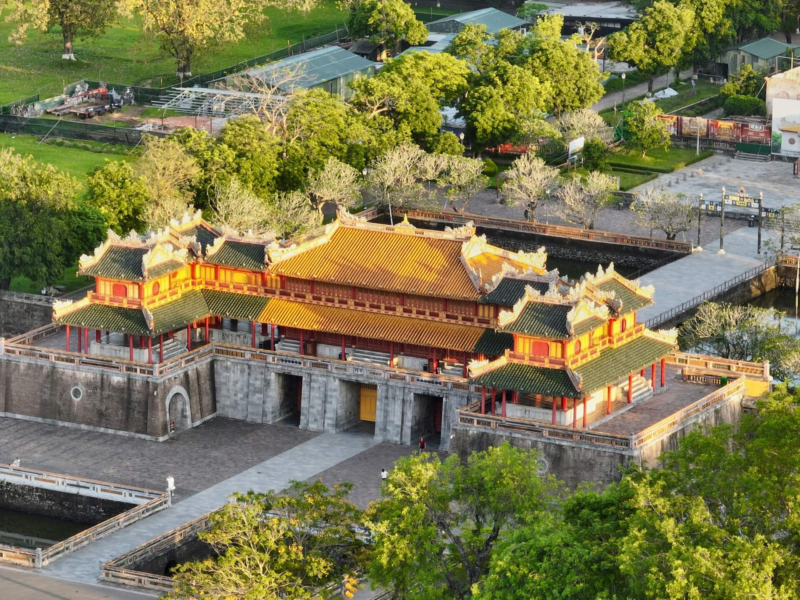
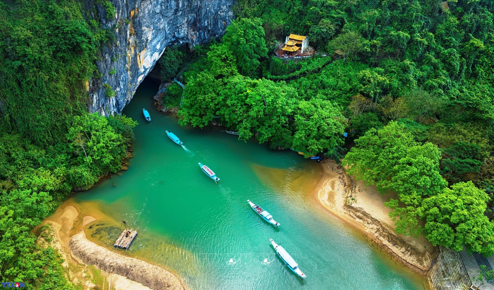
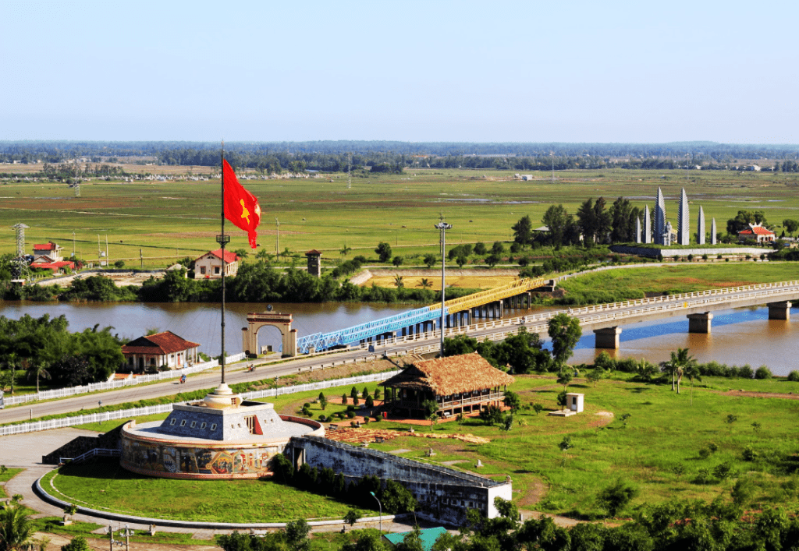

Huế
The Imperial City
Citadel walls, royal tombs, and a cuisine built for kings.
A field guide to central Vietnam
TrungDuKy plots the caves, citadels and coastlines of Huế, Quảng Bình and Quảng Trị into a single itinerary — built from what's actually worth the drive.
The route, north to south
The Imperial City
Citadel walls, royal tombs, and a cuisine built for kings.
The Kingdom of Caves
Phong Nha, Paradise Cave, and the underground rivers of Sơn Đoòng.
The Land of Memory
Vĩnh Mốc's tunnels, the Bến Hải bridge, and the hills of Khe Sanh.

HueFeatured Destination
Stretching along the poetic Perfume River, the Hue Imperial City is the most well-preserved royal citadel in Vietnam. Ngo Mon Gate, Thai Hoa Palace, and the Forbidden Purple City—every brick tells the story of the Nguyen Dynasty. Visitors can stroll along the ancient moats, explore the ten city gates, and admire one of Southeast Asia's finest examples of imperial architecture.
We automatically create the best itinerary for Hue based on your travel duration, interests, and budget.
Every attraction includes opening hours, admission fees, transportation tips, and community traveler reviews.
UNESCO World Natural Heritage
Hidden within Phong Nha–Ke Bang National Park, Phong Nha Cave is home to one of the world's longest underground rivers ever discovered. Light reflecting off thousand-year- old stalactites creates a breathtaking scene unlike any other. It is a must-visit destination for every adventure enthusiast.
Receive personalized travel suggestions based on your interests and preferences in just a few seconds.
Discover the ideal travel season, weather alerts, and the best cave conditions throughout the year.

Quang Binh
Quang TriHistorical Journey
Spanning the Ben Hai River, Hien Luong Bridge once marked the temporary boundary separating North and South Vietnam for two decades. Today, its iconic blue-and-yellow design symbolizes national reconciliation and unity, attracting millions of visitors who come to reflect on history while enjoying the peaceful beauty of Central Vietnam.
Pin every attraction and travel by motorbike or bus with optimized route planning.
Every landmark comes with carefully curated historical and cultural stories written by local experts.